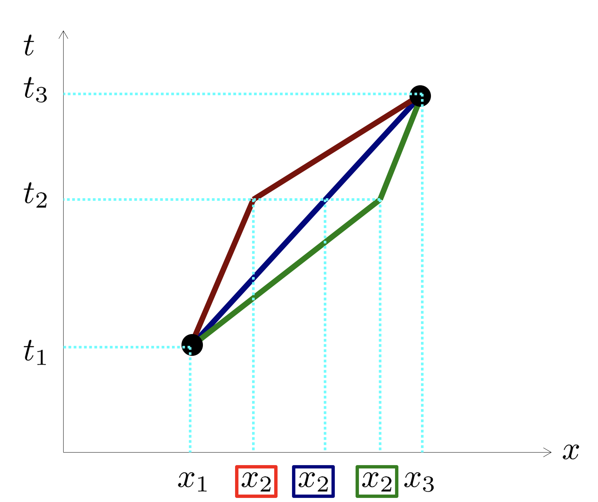

Forrige side🙂 🙁Maksimal aldringPADLET

Fikk du at vγ er en bevart størrelse? Hvis ikke, se gjennom utledningen i denne videoen
!. Men vi vet jo at relativistisk bevegelsesmengde er gitt ved p = mγv Har prinsippet om maksimal aldring her gitt oss bevaring av bevegelsesmengde? Eller det vil si, bevaring av bevegelsesmengde per masse p/m? Det er litt fristende å dra denne konklusjonen. Altså at prinsippet om maksimal aldring er et overliggende prinsipp som gir opphav til bevaring av energi og bevegelsesmengde. La oss se når vi setter på gravitasjon...